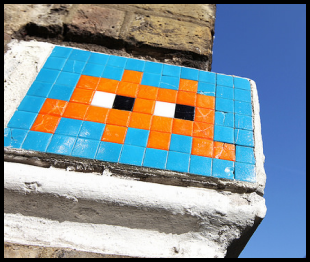

Invader
Le street-Art raconte en images ce que les habitants n’osent pas toujours dire avec des mots.
À Paris, le street art s’invite sur les façades d’immeubles, les terrains de sport et les ruelles discrètes. De Belleville au 13e arrondissement, la ville devient un musée à ciel ouvert où fresques monumentales, pochoirs, mosaïques et collages transforment le paysage urbain.
Explore la carte, zoome sur les pins : derrière chaque point se cache une fresque, un quartier et une autre façon de regarder Paris.
Invader
Fresque d’Init
Chuuttt
Codex Urbanus
Fresque de Seth
Mur de Belleville
Comment le regard d’un enfant peut-il transformer la ville en terrain d’évasion plutôt qu’en espace contraignant ?
Dans le 13ᵉ, Seth peint de grands personnages d’enfants plongés dans des mondes imaginaires, souvent de dos, absorbés par un paysage de couleurs ou de formes abstraites. Ces figures invitent à imaginer ce qu’ils voient, et transforment la façade en fenêtre ouverte sur une fuite possible hors du quotidien urbain.
Artiste : Seth (Julien Malland) Lieu : Façade d’immeuble, boulevard Vincent-Auriol / parcours Boulevard Paris 13 Type : Fresque monumentale Technique : Peinture murale, aérosol Contexte : Réalisée dans le cadre du parcours de fresques du 13ᵉ, visible depuis le métro aérien.
À Montmartre, Codex Urbanus a créé un bestiaire urbain en peignant des créatures hybrides numérotées sur les murs, escaliers et pignons de la Butte. Ces chimères obligent le promeneur à ralentir, lever les yeux, chercher les détails, révélant un Montmartre plus étrange et intime que celui des images touristiques.
Artiste : Codex Urbanus Lieu : Montmartre (Rue Chappe, escaliers et murs autour de la Butte), Paris 18ᵉ Type : Série d’interventions de petite taille Technique : Marqueur-peinture, peinture murale, parfois céramique Contexte : Série commencée vers 2011, non officielle, régulièrement recouverte et recréer.
Que dit un mur qui change tout le temps de la mémoire, de l’ego et de la conflictualité dans le street art ?
Historiquement, la Rue Dénoyez a aussi abrité des ateliers d’artistes et des associations, ce qui a renforcé son rôle de lieu de création et d’expérimentation dans Belleville. Avec les projets immobiliers et les transformations du quartier, certains murs ont été détruits ou transformés, ce qui a relancé le débat sur la place laissée à l’art urbain et aux espaces d’expression libre dans la ville.
Ce qui la rend particulière, c’est son caractère évolutif : les œuvres s’y recouvrent en permanence, certains murs pouvant changer totalement d’apparence en quelques semaines. La rue fonctionne comme un atelier à ciel ouvert où artistes locaux, collectifs, graffeurs de passage et parfois habitants viennent ajouter leur couche, sans hiérarchie visible entre “grande fresque” et tag rapide.
La Rue Dénoyez, à Belleville, est recouverte de tags, pochoirs, fresques, collages et stickers qui se superposent sans cesse sur les façades et les portes murées. Ce recouvrement permanent crée un palimpseste de couleurs et de messages où aucune image n’est stable, montrant un art urbain vivant, éphémère et parfois en concurrence.
Artistes : Multiples (mur collaboratif) Lieu : Rue Dénoyez, Paris 20ᵉ Type : Ensemble de murs de street art Technique : Aérosol, pochoir, collage, affiches, stickers Contexte : Spot emblématique du street art parisien, très lié à l’histoire récente de Belleville.
Comment une seule figure monumentale, silencieuse, peut-elle imposer un temps d’arrêt dans l’un des lieux les plus bruyants et touristiques de Paris ?
Réalisée au pochoir par Jef Aérosol, figure pionnière du street art en France, l’œuvre détourne le geste intime du “chut” pour en faire un signal urbain, presque un panneau de signalisation émotionnel. Elle invite les passants à écouter ce que la ville a à dire quand on se tait un instant : les bruits, les langues, les tensions, mais aussi les moments de pause qui existent encore dans l’hyper-centre parisien.
Artiste : Jef Aérosol Titre : Chuuuttt !!! Lieu : Pignon d’immeuble donnant sur la place Igor-Stravinsky, Paris 4ᵉ (près du Centre Pompidou) Type : Fresque monumentale au pochoir Technique : Pochoir, peinture en noir et blanc avec détails colorés (flèche rouge signature)
Les mosaïques d’Invader, inspirées des jeux vidéo rétro, sont disséminées sur les façades de nombreux quartiers de Paris, du Marais à Montmartre. Chaque “invader” devient un repère discret, que certains habitants traquent comme un jeu de piste, révélant une couche ludique et numérique dans la ville historique.
Artiste : Invader Lieux : Nombreux murs et angles de rue à Paris (Marais, Centre, Montmartre, etc.) Type : Petites mosaïques murales Technique : Carreaux de faïence collés sur façade (Mosaïques) Contexte : Projet au long, étendu à de nombreuses villes du monde, avec une forte densité de pièces à Paris.